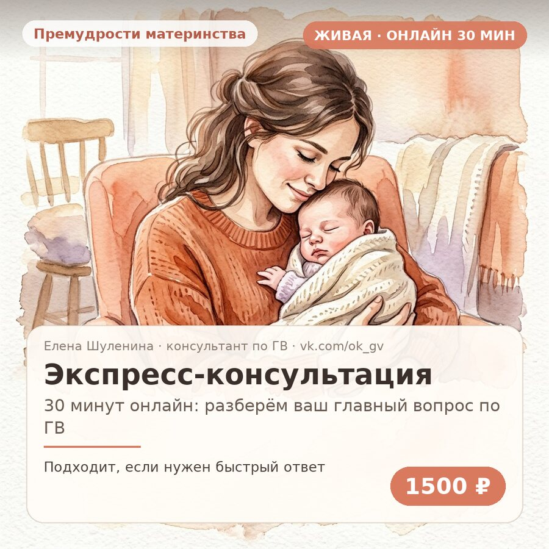
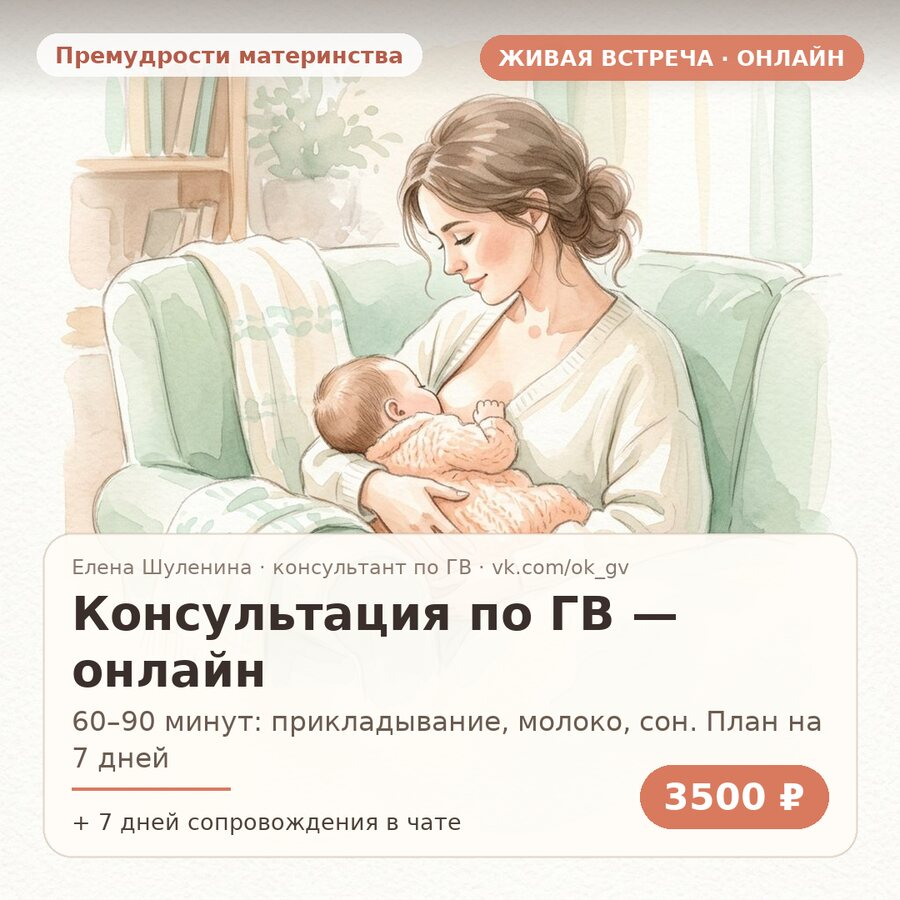
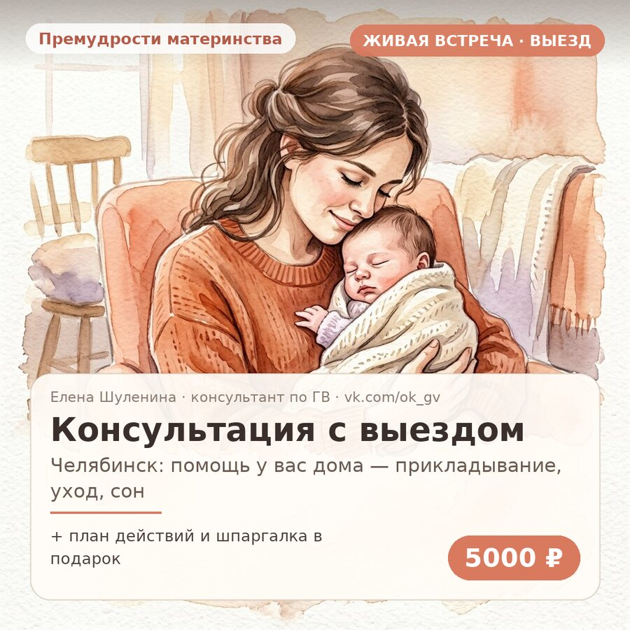
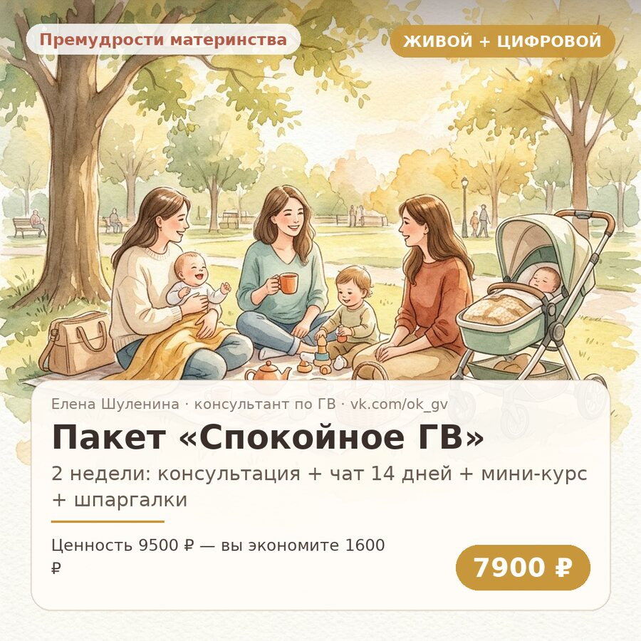
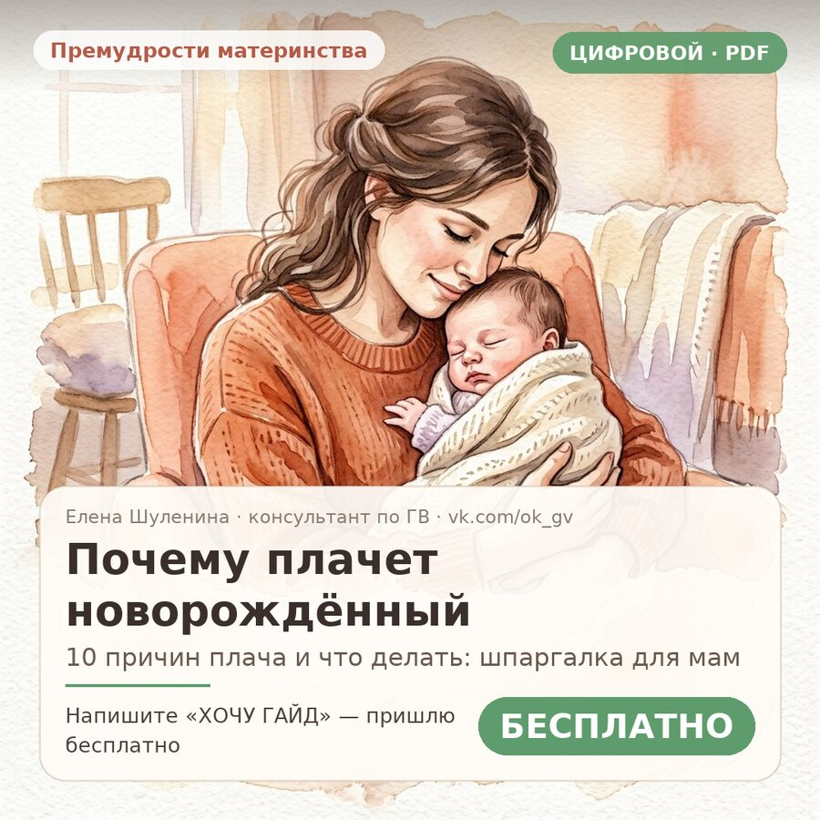
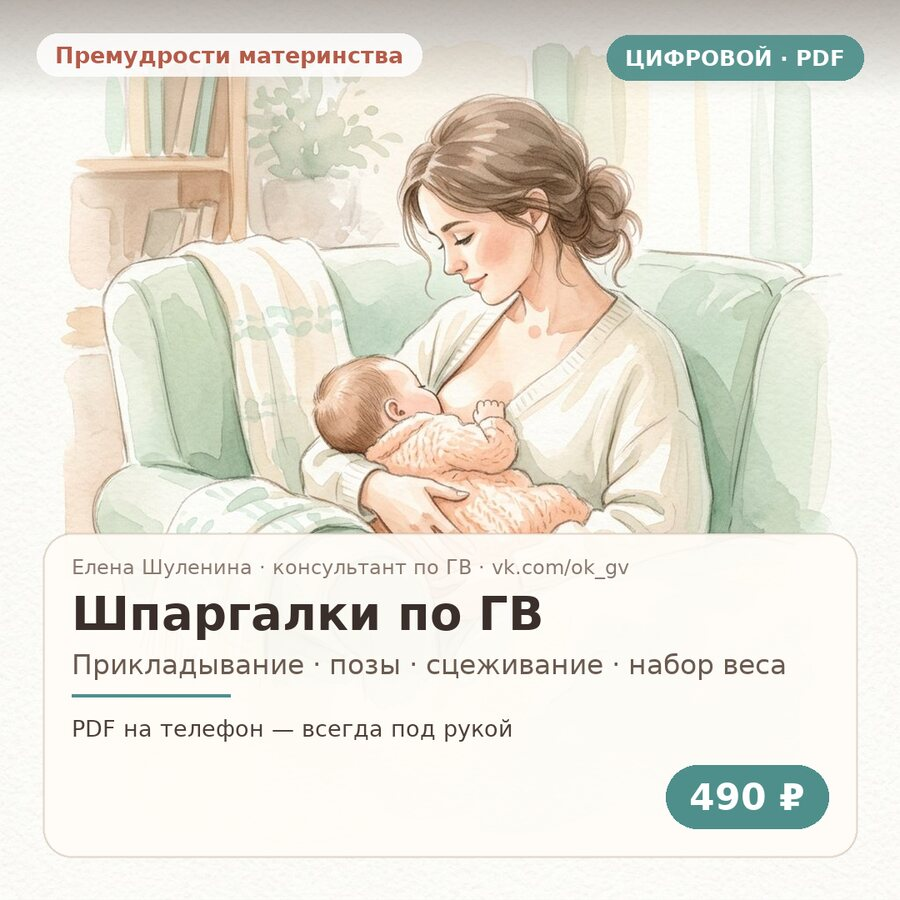
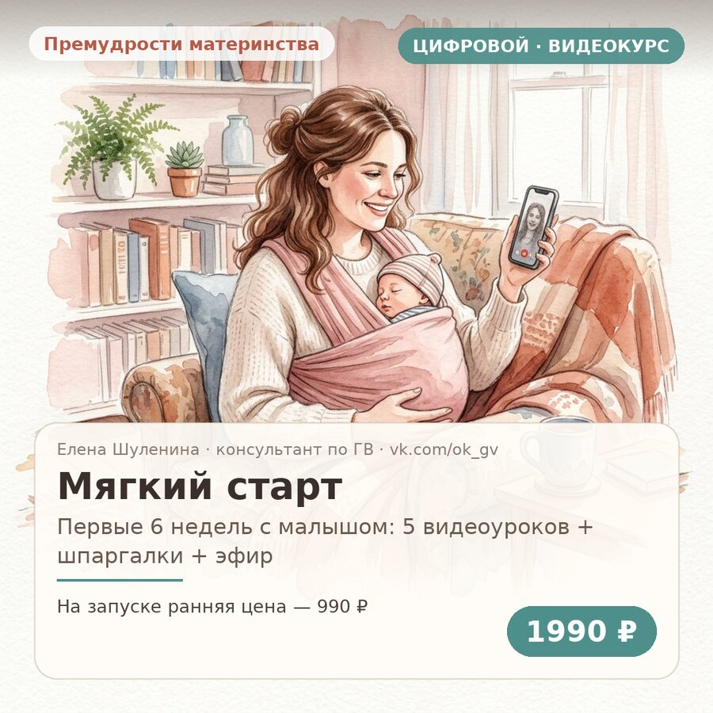
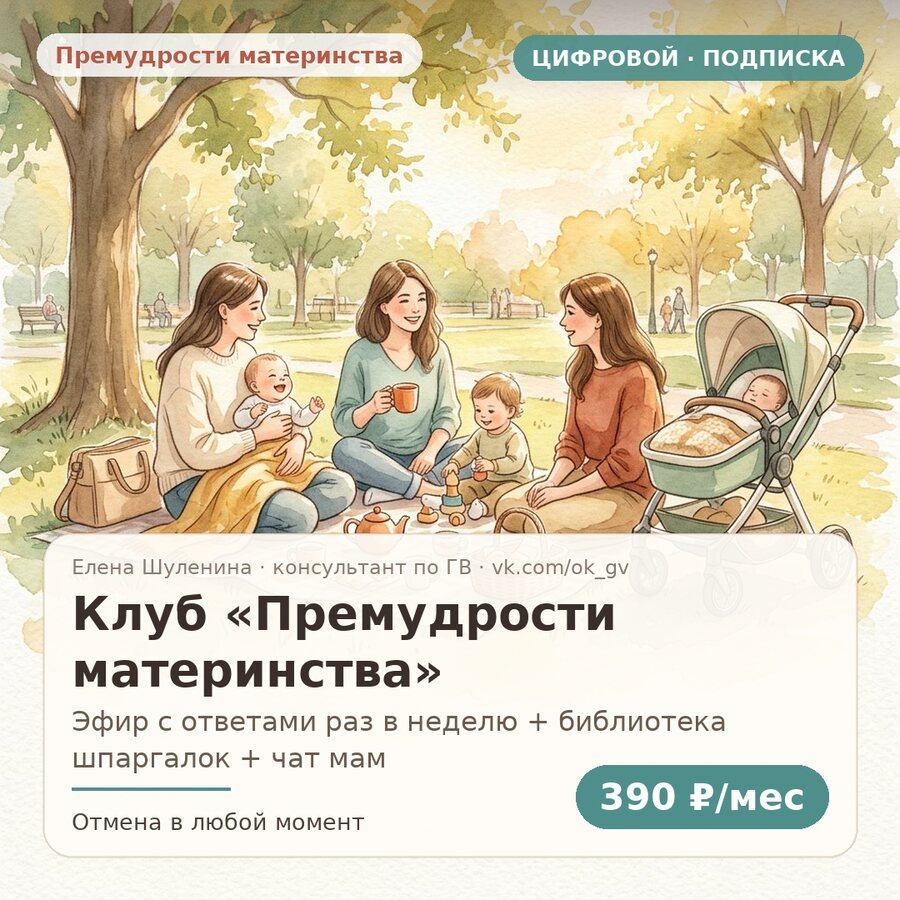
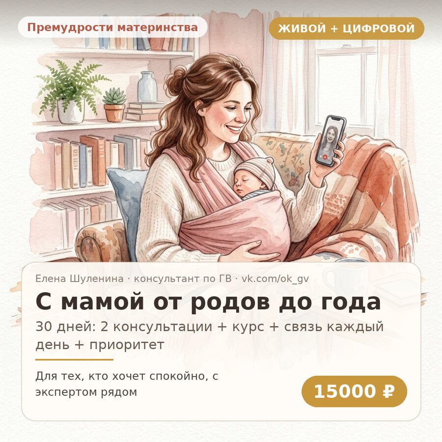

🤱
Наладим грудное вскармливание
Прикладывание, позы, боль и трещины, тревога «хватает ли молока», частые прикладывания, вечерние кормления, сцеживание, кризисы и мягкое завершение.
Помогу наладить кормление, понять плач и ритмы малыша, выстроить мягкий уход — и вернуть вам спокойствие. Онлайн по всей России и с выездом по Челябинску.
Чаще всего мамы приходят ко мне вот с этим. И почти всегда ситуация решается быстрее, чем кажется в 3 часа ночи.
Прикладывание, позы, боль и трещины, тревога «хватает ли молока», частые прикладывания, вечерние кормления, сцеживание, кризисы и мягкое завершение.
Почему малыш плачет, как отличить голод от перевозбуждения и потребности в контакте, как мягко пройти адаптацию после родов.
День без хаоса: ритмы кормлений и сна по неделям, безопасный совместный сон, купание, ношение и уход, который успокаивает.
Без осуждения, без давления и страшилок. Разберём, что происходит с телом и эмоциями, и как просить помощь. Смесь — не приговор, вина — не метод.
Можно начать с короткого разбора одного вопроса, а можно сразу взять сопровождение, чтобы рядом был человек, который отвечает.

Быстрый стартОдин острый вопрос — быстрый разбор и понятный следующий шаг.

Выбирают чаще всегоПолный разбор вашей ситуации: от прикладывания до сна и настроения мамы.

Для мам ЧелябинскаКогда важно, чтобы посмотрели вживую и показали руками.

Максимум поддержкиДля мам, которым нужна не разовая встреча, а сопровождение.
⚠️ Я — общественный консультант, а не врач. При температуре, сильной боли, уплотнениях и других острых состояниях сначала обратитесь к врачу: я работаю в связке с медиками и не заменяю их.

10 причин плача и что делать в каждом случае. Плюс шкала «спокоен / в порядке / нужен врач».
Написать «ХОЧУ ГАЙД» →
Прикладывание, позы, сцеживание и хранение молока, набор веса — PDF на телефон, всегда под рукой.
Купить шпаргалки →
Первые 6 недель с малышом: 5 видеоуроков, шпаргалки и бонус-эфир с ответами на вопросы.
Узнать о курсе →
Эфир с ответами раз в неделю, библиотека шпаргалок и чат мам. Отмена в любой момент.
Вступить в клуб →
30 дней: 2 консультации, курс, связь каждый день и приоритетный ответ. Для тех, кто хочет спокойно, с экспертом рядом.
Обсудить пакет →Коротко расскажите, что волнует: ГВ, плач, сон, уход, усталость. Отвечу и подскажу, какой формат подойдёт.
Экспресс, полная консультация, выезд или сопровождение. Подстраиваюсь под режим малыша — можно с ребёнком на руках.
После встречи у вас остаётся письменный план на 7 дней и мой чат: корректируем шаги, пока не станет спокойно.
Вы перестаёте гадать и точно знаете, что делать — даже в 3 часа ночи.
Я — общественный консультант по грудному вскармливанию и специалист по новорождённым из Челябинска. Помогаю мамам мягко пройти первые недели, понять малыша и найти опору в материнстве.
Тёплые встречи-пикники в парках и уютные онлайн-эфиры: приходите с малышом, вопросами и хорошим настроением. Это бесплатно — и часто именно здесь мамы находят подруг и первое спокойствие.
Узнать о ближайшей встречеКормила через слёзы, были трещины и мысль всё бросить. После консультации поправили прикладывание — на пятый день кормила без боли. И главное, перестала себя грызть.
Была уверена, что молока мало, и уже купила смесь. Елена спокойно разобрала признаки, показала, как считать, и оказалось — всё в порядке. Просто никто не объяснил.
Самое ценное — чат после консультации. Пишешь ночью, а утром есть ответ и понятный шаг. Ощущение, что рядом взрослый человек, который знает, что делать.
Хотите оставить свой отзыв или почитать больше историй — заглядывайте в сообщество vk.com/ok_gv.
Короткая шпаргалка, которую можно читать с телефона одной рукой. Внутри — 10 причин плача, что делать в каждом случае и когда пора к врачу.
Да, я работаю онлайн со всей Россией. Онлайн-формат подходит для большинства ситуаций: прикладывание можно посмотреть по видео, разобрать ритмы, сон, уход и тревогу. Выезд — только по Челябинску.
Напишите как можно скорее, чаще всего я нахожу окно в тот же или на следующий день. Но если есть температура, сильная боль, уплотнения в груди, резкая потеря веса у малыша — сначала врач. Я не заменяю медицинскую помощь.
Если вопрос один и нужен быстрый ориентир — экспресс за 1500 ₽. Если вопросов несколько, ситуация тянется или хочется план и поддержку — берите полную консультацию: там есть письменный план и чат на 7 дней.
Нет. Моя задача — помочь наладить кормление в вашей реальности, а не оценивать. Мы вместе решим, что можно улучшить, и что делать со смесью — сохранить, сократить или уйти от неё, если это возможно и нужно вам.
По видеосвязи (VK, Zoom, WhatsApp), аудио или в чате — как удобно. Можно с малышом на руках, в халате и в перерывах на кормление: это нормально и никого не смущает.
Переводом по СБП или через сообщения сообщества. После оплаты подтверждаю время, а сразу после встречи присылаю письменный план и бонусные шпаргалки.
Расскажите, что сейчас волнует больше всего. Подберём формат: от бесплатного гайда до сопровождения. Отвечаю лично, обычно в течение дня.
📍 Челябинск · онлайн по всей России · 🤱 консультант по грудному вскармливанию
{kind=link}
{kind=link}
{kind=link}
{kind=link}
{kind=link}
{kind=link}
{kind=link}
{kind=link}
{kind=link}